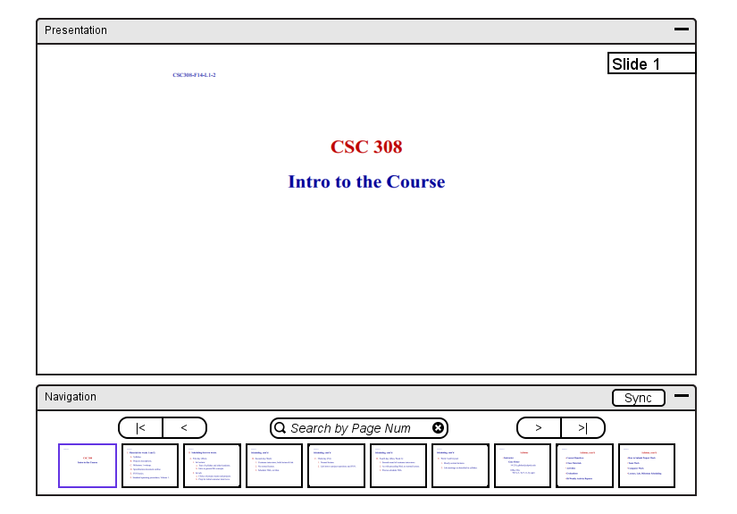

Many of the tools for a student to navigate viewing a lecture are directly correlated to how an instructor navigates presenting a lecture, which are presented in section 2.3.1.
The core difference between the student's interface and the instructor's interface is the ability of a student to navigate through different slides from the instructor's view, depending on which mode the instructor sets the class in.
While the class is in free mode, the student navigates freely to whichever
slide the student is searching for. Figure 42 shows the instructor presenting
on one slide and Figure 43 shows the student viewing a different slide.

Figure 42: Instructor presenting a lecture to students.
Figure 43: Student navigating through a lecture.
For a student to set their presentation window back to the slide the instructor is currently presenting, the student presses the 'Sync' button.
The instructor can also use the 'Sync' button to set all students' views to the current slide being presented, and the instructor is also able to do this action in lock mode as well. When the instructor switches to lock mode, the student is on the targeted slide the instructor is presenting and navigation tools are disabled. Figure 44 shows the student's current interface while in lock mode with the navigation tools window now in grey.
Figure 44: Student's view in lock mode.